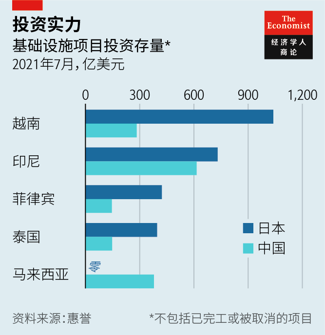
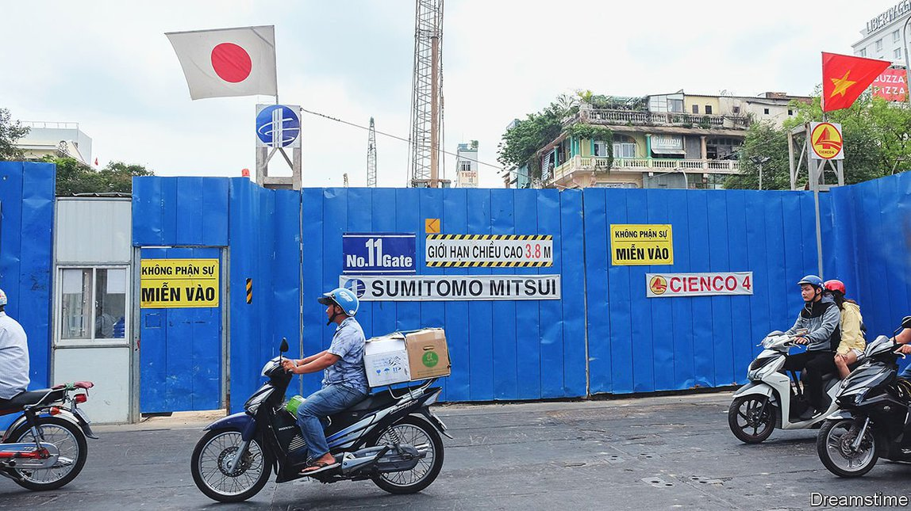
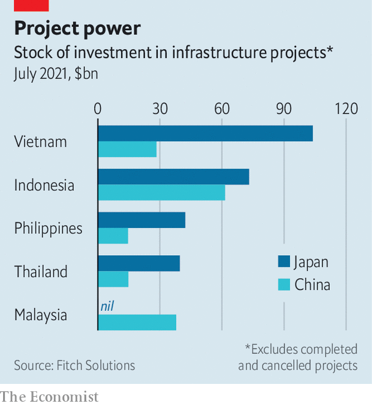

2021-08-31T14:55:56+00:00
不声张的巨人
一瞥日本在东南亚低调的金融实力
它在该地区的基建投资超过中国

经过多年的一再延期，越南的头两条地铁逐渐接近完工。这两个项目分别位于越南最大的两座城市，不仅成为了越南现代化的象征，也成了亚洲最大的两个基建投资来源国之间利益冲突的象征。河内地铁得到了中国发展援助项目的资助；胡志明市地铁的开工则得到了日本政府的帮助。
尽管中国伸向海外的金融触角引发了极大关注，但在东南亚的基建投资方面，日本仍然显著领先（见图表）。数据供应商惠誉（Fitch Solutions）的数据显示，日本在印尼、马来西亚、菲律宾、泰国和越南的未完工项目的总投资额为2590亿美元，而中国为1570亿美元。由于新冠疫情导致新建基础设施投资停滞，两国的投资额自2019年以来都有所下降，但日本的领先优势略有扩大。
胡志明市地铁一号线的建设是日本海外基建投资的一个缩影。政府和准政府机构为日本庞大的企业集团开路。该项目差不多开始于九年前，早期得到了日本国际协力机构（Japan International Co-operation Agency）的资助，日本大部分海外发展援助都由此机构促成。业务繁多的私营企业集团住友商事作为项目合作方之一赢得了建设合同，东京地铁（Tokyo Metro）提供了技术援助，日立公司交付的列车将在这条线路上运行。
拜登治下的美国毫不掩饰自己挑战中国“一带一路”倡议的雄心，而日本却一直不愿意将自己追逐大型基建项目说成是与中国竞争。尽管如此，还是不难看出日本在战略上的变化，尤其是在前首相安倍晋三执政期间。2015年，安倍政府和亚洲开发银行以及其他投资者推出了“高质量基础设施合作伙伴关系”（PQI），承诺在之后的五年内提供1100亿美元的政府和民间资本用于东南亚的基础设施项目（虽然朝向这一目标的进展没有得到密切跟踪）。尽管日本没有公开叫板“一带一路”，但它反复强调“高质量”的弦外之音在这一地区并非无人意会。
日本在2016年推出“自由开放的印太”战略，将外交政策目标与金融优先事项连接起来。PQI被明确列为该战略的一部分。1950年为促进出口而设立的日本国际协力银行（Japan Bank for International Co-operation）也在2016年修改了职能以容许更大的金融风险。近年来，它已经将重心转向为海外投资提供融资：截至去年3月的一年里，该行提供的资金中出口贷款仅占11%，而境外投资贷款占到了82%。
与大多数西方经济体相比，日本具有一些独特的优势，每一条优势都可以在某种程度上解释日本为什么具备这种相对不显山露水的金融实力。近水楼台是明摆着的优势之一：日本最大的那些公司对亚洲其他市场了如指掌，几十年来，这些市场在它们的国际销售额中占据了相当大的比重。2019年，日本对东盟的出口超过了美国公司，尽管美国的经济规模是日本的四倍多。
尽管日本不能像中国那样通过大型国有企业调动私人投资，但相比其他资本主义经济体，其私营部门与政府的关系要密切得多，因而能顺畅地合作。南加州大学的坚田沙织指出，在与中国争夺地区性基础设施项目的过程中，日本有点回到了为它带来二战后经济繁荣的公私部门无缝合作的战略老路上。相比全盛期的“铁三角”（政治上占主导地位的自民党、政府机构和日本财阀），这种合作关系要松泛得多。但对外贸易和投资中的重商主义传统还是显而易见的。
政府和私人投资目标如此相互交融、界限不清，可能一度让西方国家感到震惊，尤其是在日本被视为亚洲崛起的经济大国之时。但“一带一路”的出现以及对中国在东南亚经济影响力的担忧让关注重点转移。作为中国在东南亚金融影响力的唯一有力的竞争者，日本在海外基建方面的实力很可能会受到世界大多数地区的欢迎——即使日本并不大声宣扬它。
2021-08-31T14:55:56+00:00
A quiet giant
A glimpse into Japan’s understated financial heft in South-East Asia
It is a bigger investor in the region’s infrastructure projects than China
VIETNAM’S FIRST two rapid-transit rail lines are inching closer to completion, after years of delays. The projects, one in each of the country’s two largest cities, have become symbols not just of Vietnam’s modernisation, but of the duelling interests of Asia’s two biggest sources of infrastructure investment. Hanoi’s line has been funded by Chinese development assistance; Ho Chi Minh City’s was launched with help from the Japanese government.
Although China’s financial reach overseas attracts enormous attention, when it comes to infrastructure in South-East Asia, Japan is still very much the leader (see chart). In total, it has $259bn invested in unfinished projects in Indonesia, Malaysia, the Philippines, Thailand and Vietnam, according to Fitch Solutions, a data provider, compared with China’s $157bn. Both figures have declined since 2019, as the covid-19 pandemic has deterred greenfield infrastructure investment, but Japan’s lead has widened a bit.
The construction of Ho Chi Minh City’s Urban Railway Line 1 is a microcosm of the Japanese infrastructure offering abroad. Government and quasi-governmental agencies laid the groundwork for the country’s mammoth business groups. The project began almost nine years ago with early support from the Japan International Co-operation Agency, which facilitates most of the country’s overseas development assistance. Sumitomo Corporation, a sprawling private-sector conglomerate, won the construction contract as part of a consortium, Tokyo Metro has provided technical assistance, and Hitachi’s trains have been delivered to run on the line.
While America under President Joe Biden has been forthright about its ambition to challenge China’s Belt and Road Initiative (BRI), Japan has been reluctant to frame its pursuit of large infrastructure projects as a contest with China. Still, it is not hard to spot the change in strategy, particularly during former prime minister Abe Shinzo’s period in office. In 2015 the government launched the “Partnership for Quality Infrastructure” (PQI) with the Asian Development Bank and other investors, which promised to provide public and private capital worth $110bn for infrastructure projects in the region over the next five years (though progress in reaching this goal has not been closely tracked). Despite not calling out the BRI in public, the message behind Japan’s repeated emphasis on quality has not gone unheard in the region.
The PQI was explicitly made part of the country’s “Free and Open Indo-Pacific” strategy, launched in 2016, linking its foreign-policy objectives with its financial priorities. That same year, the Japan Bank for International Co-operation, which began life in 1950 as an export-promotion bank, saw its role amended to allow for greater financial risk-taking. In recent years it has pivoted towards financing overseas investment: in the year to March 2020 only 11% of the bank’s commitments were export loans, while 82% were overseas investment loans.
Japan has some distinct advantages compared with most Western economies, each of which goes some way to explaining the country’s relatively discreet financial heft. Simple proximity is one of them: Japan’s largest companies are deeply familiar with other Asian markets, which have made up a significant share of their international sales for decades. Japan exported more to the Association of South-East Asian Nations than American firms did in 2019, even though the American economy is more than four times the size of Japan’s.
Although the country cannot deploy private investment through large state-owned enterprises, as China does, relationships between the private sector and the government are much closer than in other capitalist economies, greasing the wheels of co-operation. Saori Katada of the University of Southern California notes that, in competing with China for regional infrastructure, Japan has reverted a little to its “Old Japan” strategy of the post-war boom, in which the private and public sectors worked seamlessly together. The partnership is far less heavy-handed than it was in the heyday of the “iron triangle”—the politically dominant Liberal Democratic Party, the apparatus of the state and the country’s business scions. But the legacy of a mercantilist attitude to foreign trade and investment is clear.
That blending and blurring of state and private investment objectives might once have produced consternation from Western governments, particularly when Japan was seen as Asia’s ascendant economic power. But the advent of the BRI and concerns about China’s economic influence in the region have changed priorities. As the only serious competitor to Beijing’s financial clout in the region, Japan’s overseas infrastructure heft is likely to be welcomed across much of the world—even if Tokyo doesn’t shout too loudly about it. ■
2021-08-31T14:55:56+00:00
不聲張的巨人
一瞥日本在東南亞低調的金融實力
它在該地區的基建投資超過中國
經過多年的一再延期，越南的頭兩條地鐵逐漸接近完工。這兩個項目分別位於越南最大的兩座城市，不僅成為了越南現代化的象徵，也成了亞洲最大的兩個基建投資來源國之間利益衝突的象徵。河內地鐵得到了中國發展援助項目的資助；胡志明市地鐵的開工則得到了日本政府的幫助。
儘管中國伸向海外的金融觸角引發了極大關注，但在東南亞的基建投資方面，日本仍然顯著領先（見圖表）。數據供應商惠譽（Fitch Solutions）的數據顯示，日本在印尼、馬來西亞、菲律賓、泰國和越南的未完工項目的總投資額為2590億美元，而中國為1570億美元。由於新冠疫情導致新建基礎設施投資停滯，兩國的投資額自2019年以來都有所下降，但日本的領先優勢略有擴大。
胡志明市地鐵一號線的建設是日本海外基建投資的一個縮影。政府和准政府機構為日本龐大的企業集團開路。該項目差不多開始於九年前，早期得到了日本國際協力機構（Japan International Co-operation Agency）的資助，日本大部分海外發展援助都由此機構促成。業務繁多的私營企業集團住友商事作為項目合作方之一贏得了建設合同，東京地鐵（Tokyo Metro）提供了技術援助，日立公司交付的列車將在這條線路上運行。
拜登治下的美國毫不掩飾自己挑戰中國“一帶一路”倡議的雄心，而日本卻一直不願意將自己追逐大型基建項目說成是與中國競爭。儘管如此，還是不難看出日本在戰略上的變化，尤其是在前首相安倍晉三執政期間。2015年，安倍政府和亞洲開發銀行以及其他投資者推出了“高質量基礎設施合作夥伴關係”（PQI），承諾在之後的五年內提供1100億美元的政府和民間資本用於東南亞的基礎設施項目（雖然朝向這一目標的進展沒有得到密切跟蹤）。儘管日本沒有公開叫板“一帶一路”，但它反覆強調“高質量”的弦外之音在這一地區並非無人意會。
日本在2016年推出“自由開放的印太”戰略，將外交政策目標與金融優先事項連接起來。PQI被明確列為該戰略的一部分。1950年為促進出口而設立的日本國際協力銀行（Japan Bank for International Co-operation）也在2016年修改了職能以容許更大的金融風險。近年來，它已經將重心轉向為海外投資提供融資：截至去年3月的一年裡，該行提供的資金中出口貸款僅佔11%，而境外投資貸款佔到了82%。
與大多數西方經濟體相比，日本具有一些獨特的優勢，每一條優勢都可以在某種程度上解釋日本為什麼具備這種相對不顯山露水的金融實力。近水樓台是明擺着的優勢之一：日本最大的那些公司對亞洲其他市場了如指掌，幾十年來，這些市場在它們的國際銷售額中佔據了相當大的比重。2019年，日本對東盟的出口超過了美國公司，儘管美國的經濟規模是日本的四倍多。
儘管日本不能像中國那樣通過大型國有企業調動私人投資，但相比其他資本主義經濟體，其私營部門與政府的關係要密切得多，因而能順暢地合作。南加州大學的堅田沙織指出，在與中國爭奪地區性基礎設施項目的過程中，日本有點回到了為它帶來二戰後經濟繁榮的公私部門無縫合作的戰略老路上。相比全盛期的“鐵三角”（政治上佔主導地位的自民黨、政府機構和日本財閥），這種合作關係要松泛得多。但對外貿易和投資中的重商主義傳統還是顯而易見的。
政府和私人投資目標如此相互交融、界限不清，可能一度讓西方國家感到震驚，尤其是在日本被視為亞洲崛起的經濟大國之時。但“一帶一路”的出現以及對中國在東南亞經濟影響力的擔憂讓關注重點轉移。作為中國在東南亞金融影響力的唯一有力的競爭者，日本在海外基建方面的實力很可能會受到世界大多數地區的歡迎——即使日本並不大聲宣揚它。